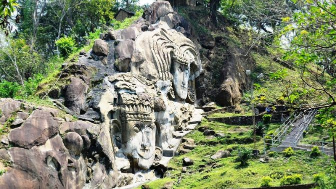
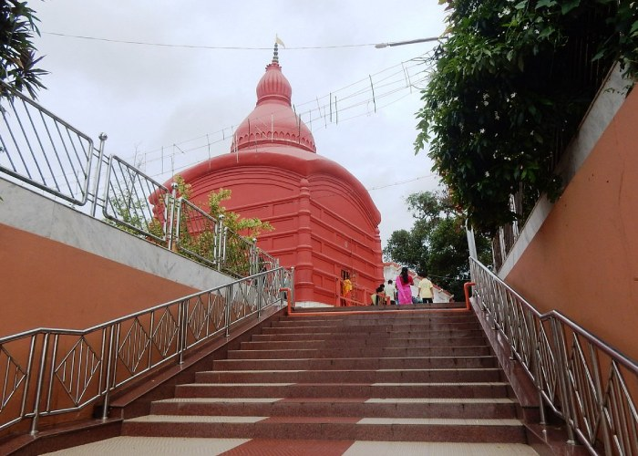
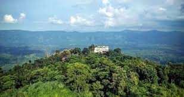
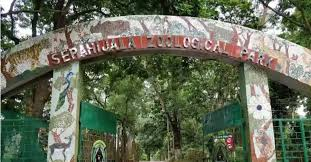

Welcome to Tripura
Tripura, nestled in the lush hills of Northeast India, is a state rich in history, heritage, and natural beauty. From ancient palaces and temples to serene lakes and dense forests, Tripura offers a diverse travel experience that blends culture with tranquility.

Ujjayanta Palace
A grand royal palace turned museum, showcasing Tripura’s rich heritage and regal splendor.

Unakoti
An ancient Shaivite site with mystical rock carvings, believed to be one less than a crore.

Trishna Wildlife Sanctuary
A lush sanctuary home to Indian Bison, rare primates, and vibrant birdlife.

Jampui Hills
Tripura’s highest hill range, famous for its Orange & Tourism Festival and breathtaking views.

Sepahijala Wildlife Sanctuary
A biodiversity hotspot with clouded leopards, exotic birds, and scenic lakes.